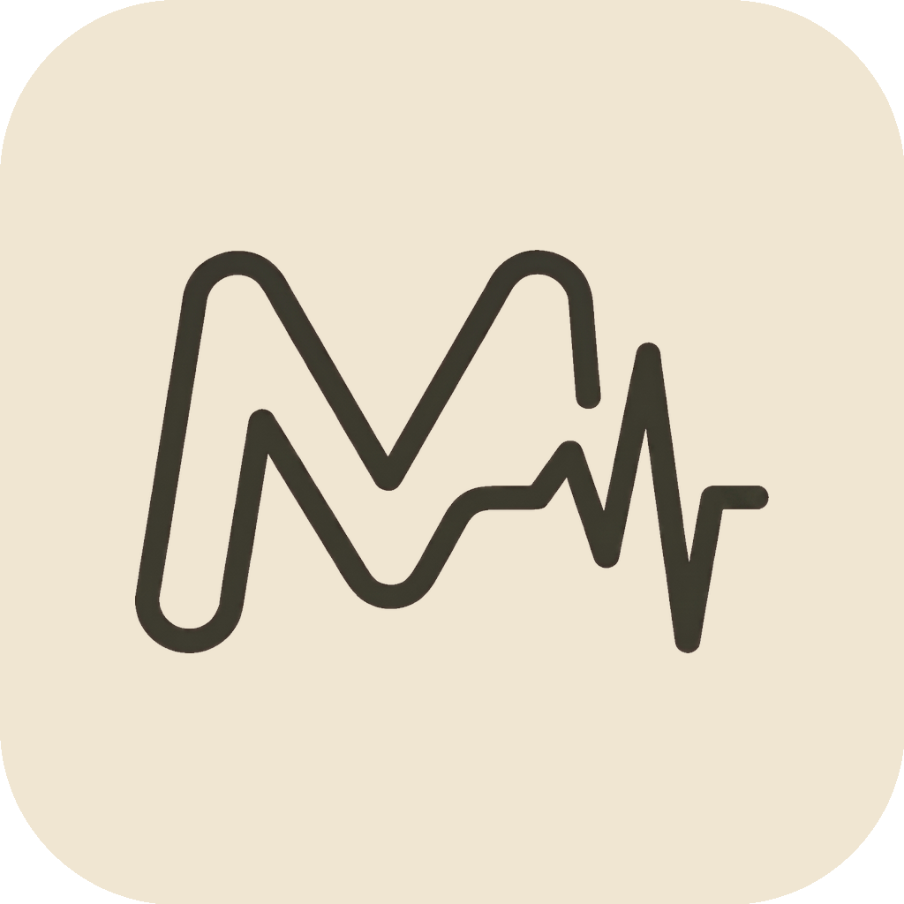
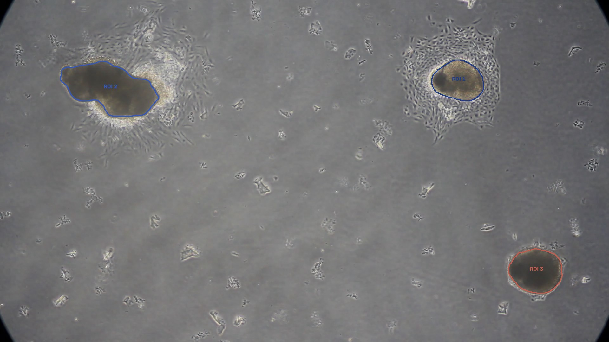
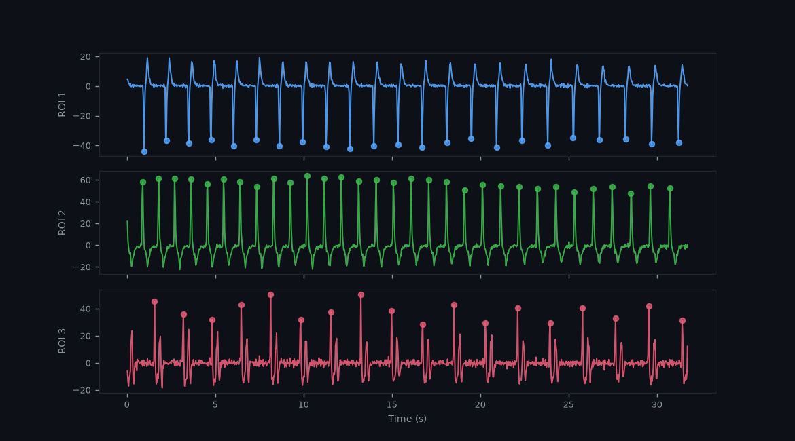
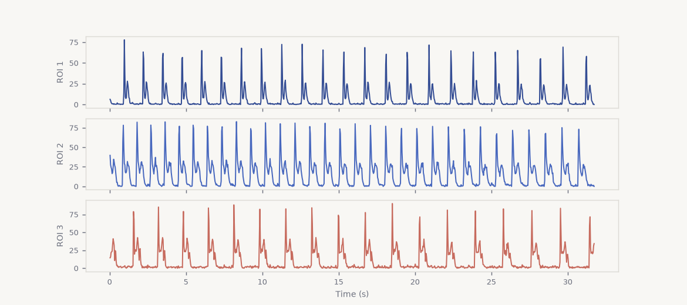

MyoOptixAutomated video analysis for cardiac organoids. Quantifies beating rate, rhythm variability, and contractility from brightfield recordings.
Windows 10/11 & macOS · 64-bit · Win ~400 MB / Mac ~1 GB · No Python required
KLT optical flow tracking across all frames
BPM, IBI, HRV, Contractility — exported to Excel
U-Net (ResNet-34) or Otsu thresholding
Self-contained app — extract and run
Interactive Demo
Step through a real analysis run on a cardiac organoid video with 3 spontaneously beating ROIs.

Motion Signal & Beat Detection

Contractility Trace

下載對應平台的壓縮檔，解壓縮到任意位置。
Windows：點兩下 MyoOptix.exe · Mac：開啟 MyoOptix.app
第一次啟動會下載模型權重（約 93 MB，僅需一次）。
匯入影片、選擇分割方式，按下執行。
查看每個 ROI 的分析結果，匯出心跳指標與原始資料。
Grant Principal Investigator
李岡遠 教授
Lee, Kang-Yun
Division of Pulmonary Medicine
School of Medicine
Taipei Medical University
Lab Director
楊添鈞 助理教授
Yang, Tien-Chun
Department of Anatomy and Cell Biology
College of Medicine
Taipei Medical University
Developer
賴竑劭
Lai, Hung-Shao
Department of Anatomy and Cell Biology
College of Medicine
Taipei Medical University
Source